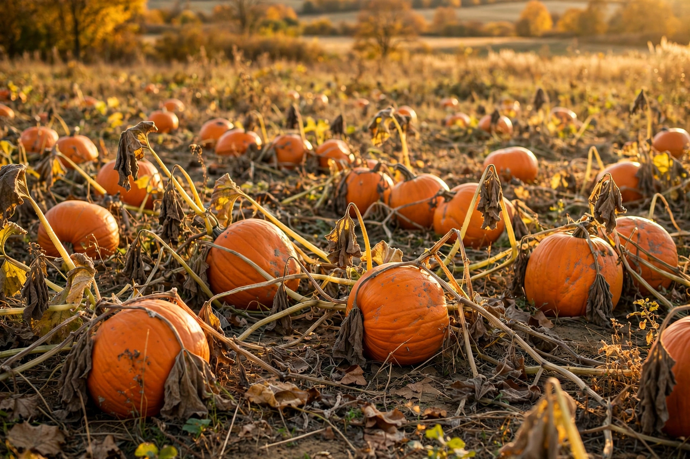

Pumpkin
From Wikipedia, the free encyclopedia

A pumpkin is a winter squash of the genus Cucurbita — most often C. pepo — a large, ribbed, typically orange fruit grown on trailing vines. Pumpkins were domesticated in Mexico and Central America as early as 7,000–9,000 years ago and formed, with maize and beans, the "Three Sisters" planting system of Indigenous North American agriculture. Today the pumpkin is two foods at once: a culinary squash (pies, soups, roasted seeds) and an autumn symbol, carved into jack-o'-lanterns at Halloween and weighing in, in giant form, at over a tonne at county-fair competitions. China and India are the largest producers overall.
From three sisters to jack-o'-lantern
In the Three Sisters system, corn stalks trellis the beans, beans fix nitrogen, and squash leaves shade the soil — an elegant piece of Indigenous engineering that early colonists adopted along with the fruit itself. Carved lanterns of turnips and swedes were made in Ireland and Scotland for the festival of Samhain, attached to tales of Stingy Jack and wandering lights; Irish emigrants in America found the native pumpkin a far better lantern, and the jack-o'-lantern turned orange. In France, Perrault's Cinderella (1697) gave the pumpkin its other great role, as a coach-in-waiting.
Pie, spice and giants
Pumpkin pie — spiced custard in a crust — descends from colonial recipes that stewed spiced milk inside a hollowed pumpkin; canned purée (mostly from Dickinson squash, however the label reads) made it a Thanksgiving standard. "Pumpkin spice", the cinnamon-nutmeg-clove-ginger blend without any pumpkin in it, became a seasonal economy after Starbucks' Pumpkin Spice Latte launched in 2003. Competitive growers meanwhile push pumpkins past 1,000 kg with selected seed, grafting and greenhouses — the world record has climbed steadily into the 1,200 kg range.